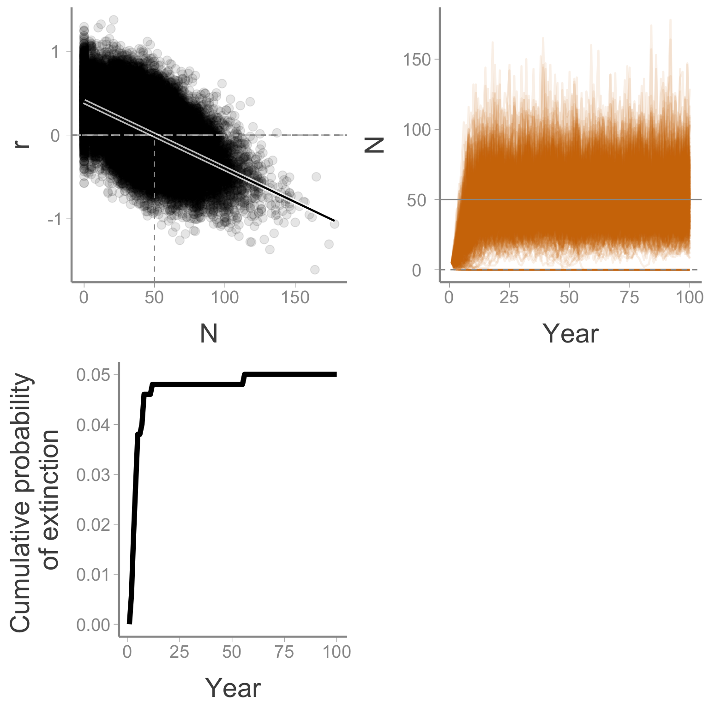
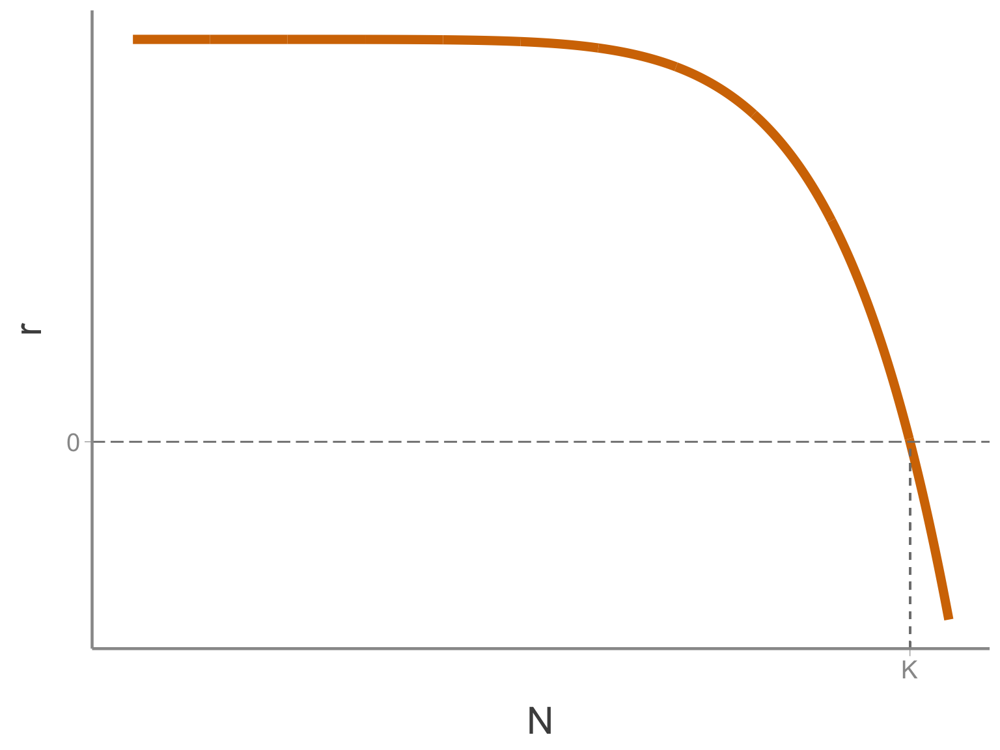
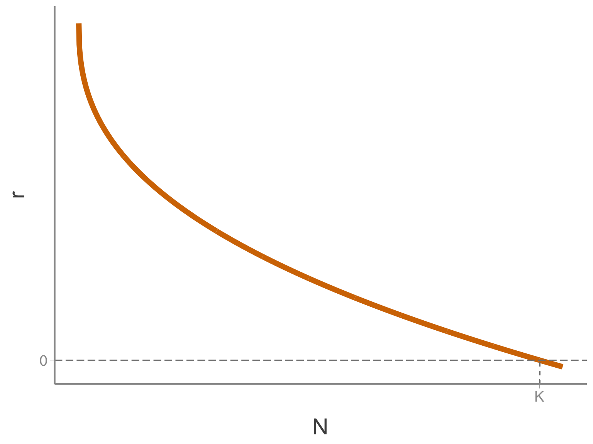
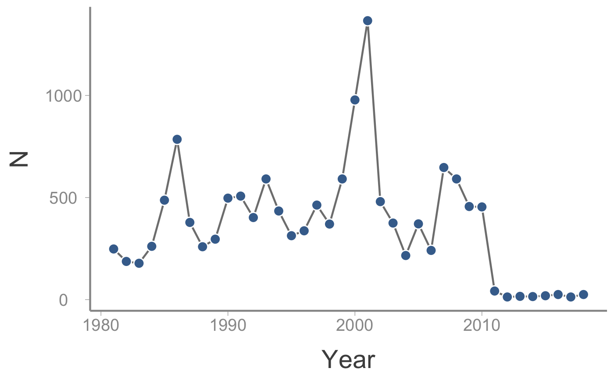

Lab 3: Population viability analysis
WILD3810: Plant and animal populations
Spring 2019
lab3.RmdIn this lab, you will learn about using population viability analysis (PVA) to predict the future dynamics of populations that are subject to stochastic variation in birth and death rates.
Objectives
Predict extinction risk using population viability analysis
Build intuition about the ecological factors that influence extinction risk
-
Rfunctions used in this exercise:
Setting up the lab
In order to organize your code and files for this homework assignment, start by creating a new project:
Open
RStudioClick
File -> New Project

- Click
New Directory

- Click
New Project

- Name the project
PVAand create it within yourWILD3810folder (clickBrowseand navigate to this folder if necessary)

Click
Create projectClick
File -> New File -> R ScriptSave this script as
PVA_lab.R(you will not need to turn in this script but saving it here will ensure that you can reference today’s lab activities to help study for the exam)Make sure you have the most update-to-date version of
WILD3810by running:
install.packages("devtools", dependencies = TRUE)
devtools::install_github("RushingLab/WILD3810")Simulating stochastic population dynamcs
The WILD3810 package includes an R function that simulates the dynamics of a user-defined number of populations that are subject to both environmental and demographic stochasticity. This function has a number of parameters that you can change to alter the deterministic and stochastic processes that govern population growth. In this lab, you will selectively change several of these parameters to see how each influences extinction risk.
Before getting into the ecological principles, let’s see how the function works and what it returns. The function requires several arguments:
N0: the initial population sizenumber.of.years: the number of years to simulate population growthr0: the intrinsic rate of population growthvariance.r: the magnitude of environmental stochasticity on the population growthK: the carrying capacity (this is optional; if you do not provideK, the function assumes density-independent growth. For this lab, we will only focus on density-dependent growth)
In the R script you just created, run the following code:
library(WILD3810)
sim_test <- pva(N0 = 5, number.of.years = 100,
r0 = 0.4, variance.r = 0.075, K = 50)
The function returns two types of output. Most obviously, the function returns three plots:
The top left plot shows the predicted (line) and actual (points) growth rates \(r\) as a function of population size
The top right plot shows the change in abundance over time for all simulated populations
The bottom plot shows the cumulative probability of extinction over time
In addition to the figures, the newly created sim_test object is a data frame that contains some useful summaries of the simulation:
sim_test| nYears | N0 | r0 | variance.r | density.dependent | K | theta | prob.extinct | median.time.to.ext |
|---|---|---|---|---|---|---|---|---|
| 100 | 5 | 0.4 | 0.075 | Yes | 50 | 1 | 0.056 | 5.5 |
This table returns some of the input parameters (nYears, N0, r0, variance.r) as well as summaries about the type of model (density dependent or independent) and carrying capacity (if density-dependent). In addition, the output include two important summary statistics:
prob.extinct: the estimated probability of extinction over the simulated time framemedian.time.to.ext: of the populations that went extinct, the median number of years to extinction
In the remainder of this lab, we will vary the input parameters and use the output of the function to visually understand the ecological factors that influence extinction risk.
Factor 1: Growth rate
First let’s see how the expected low-density growth rate (r0) influences extinction risk. To do this, we will simulate several data sets that vary r0 but are the same in every other way. To start, change r0 to 0.1, leaving the other parameters the same as above.
Prediction: Do you expect extinction risk to be higher, lower, or the same than the previous simulation? Why?
sim_r.1 <- pva(N0 = 5, number.of.years = 100,
r0 = 0.1, variance.r = 0.075, K = 50)Were you correct?
Now make \(r\) bigger. Choose a value of \(r0 > 0.4\). Call the new object sim_r.2.
Prediction: How will a larger growth rate influence extinction risk?
Finally, make \(r\) smaller. Run simulations called sim_r.3 with \(r = 0\) and sim_r.4 with \(r < 0\).
Interpretation: What happens to populations that have negative or positive values of r0?
How does the time to extinction change as a function of \(r\)?
Before moving on, use the dplyr function bind_rows to create a new data frame that contains all of the simulations created in this section. Call the new data frame sim_r.
Factor 2: Carrying capacity
Next, let’s vary K. To start, leave the other options the same as in sim_r.1 but with K=150:
sim_K.1 <- pva(N0 = 5, number.of.years = 100,
r0 = 0.1, variance.r = 0.075, K = 150)What happened to extinction probability relative to K = 50? To make sure the previous result wasn’t a fluke, increase K again and see if the pattern holds:
sim_K.2 <- pva(N0 = 5, number.of.years = 100,
r0 = 0.1, variance.r = 0.075, K = 500)Interpretation: Why did larger K influence extinction probability? Did extinction probability continue to change as K increased? Why or why not?
Why do the populations go above K if that is the maximum abundance the environment can support?
Why do the populations show predictable patterns of increase and decrease around K?
Before moving on, use the dplyr function bind_rows to create a new data frame that contains all of the simulations created in this section. Call the new data frame sim_K.
Factor 3: Variability in r
Now let’s change variance.r. First, create a simulation with no environmental stochasticity:
sim_var_r.1 <- pva(N0 = 5, number.of.years = 100,
r0 = 0.4, variance.r = 0, K = 150)You can see if the top left figure that the actual growth rates in each year were exactly equal to the predicted values - no stochasticity in the mean population growth rate. Yet the population size figure still shows populations going up and down. Why is that?
Now increase variance.r relative to the earlier simulations:
sim_var_r.2 <- pva(N0 = 5, number.of.years = 100,
r0 = 0.4, variance.r = 0.1, K = 150)What happened to extinction risk? Again, let’s see if that pattern holds:
sim_var_r.3 <- pva(N0 = 5, number.of.years = 100,
r0 = 0.4, variance.r = 0.2, K = 150)Run a few more simulations with increasing values of variance.r. Does the general pattern you saw on the previous simulations hold?
Interpretation: Why does increasing stochasticity influence probability of extinction?
Factor 3b: Demographic stochasticity
Before moving on from the question of stochasticity, let’s look more closely at the role of demographic stochasticity by removing environmental stochasticity from the model (variance.r = 0) and observing how demographic stochasticity influences extinction risk at different carrying capacities. Start with a large K (K=500):
Prediction: At large sizes, do you expect demographic stochasticity to have important consequences for extinction risk?
sim_var_r.4 <- pva(N0 = 500, number.of.years = 100,
r0 = 0.4, variance.r = 0, K = 500)Now change K=50:
Prediction: Will the extinction risk of this population be greater than 0?
sim_var_r.5 <- pva(N0 = 50, number.of.years = 100,
r0 = 0.1, variance.r = 0, K = 50)Finally, N0=10:
sim_var_r.6 <- pva(N0 = 10, number.of.years = 100,
r0 = 0.1, variance.r = 0, K = 10)Interpretation: Why are small populations more vulnerable to demographic stochasticity?
How does r0 influence how vulnerable populations are to demographic stochasticity?
Before moving on, use the dplyr function bind_rows to create a new data frame that contains all of the simulations created in this section. Call the new data frame sim_var_r.
Factor 4: Initial population size
So far, all of the simulations have been started with very small initial sizes (N0 = 5). Next examine how the initial population size influences extinction risk.
Prediction: How do you predict the probability of extinction will change as initial population size increases?
sim_var_r.2 <- pva(N0 = 20, number.of.years = 100,
r0 = 0.4, variance.r = 0.2, K = 150)Were you right?
Increase N0 again to make sure it wasn’t a fluke:
sim_N0.2 <- pva(N0 = 50, number.of.years = 100,
r0 = 0.4, variance.r = 0.2, K = 150)What if N0 > K?
sim_N0.3 <- pva(N0 = 250, number.of.years = 100,
r0 = 0.4, variance.r = 0.2, K = 150)Interpretation: Why does increasing population size influence extinction risk?
Before moving on, use the dplyr function bind_rows to create a new data frame that contains all of the simulations you have created so far. Call the new data frame sim_N0.
Factor 5: Strenth of density dependence
Finally, let’s see how the strength of density-dependence influence extinction risk. Remember from lecture 4 the theta-Ricker growth model:
\[\Large N_{t+1}=N_t e^{\bigg[r_0\bigg(1 - \bigg[\frac{N}{K}\bigg]^\theta\bigg)\bigg]}\]
The parameter \(\theta\) controls the shape of the density dependence curve. When \(\theta > 1\), \(r\) does not respond to \(N\) until \(N\) is big enough that resources become limiting

If \(\theta < 1\), resources quickly become scarce, and \(r\) is suppressed even at low \(N\)

Let’s see how the shape of the density-dependence curve influences extinction risk. First, let’s explore \(\theta < 1\).
Prediction: Do you expect extinction risk to be higher, lower, or the same than the previous simulation? Why?
sim_theta.1 <- pva(N0 = 250, number.of.years = 100,
r0 = 0.4, variance.r = 0.2, K = 150, theta = 0.75)Again, make \(\theta\) smaller to see if the pattern holds:
sim_theta.2 <- pva(N0 = 250, number.of.years = 100,
r0 = 0.4, variance.r = 0.2, K = 150, theta = 0.25)Was your prediction correct?
Now try \(\theta > 1\):
sim_theta.3 <- pva(N0 = 250, number.of.years = 100,
r0 = 0.4, variance.r = 0.2, K = 150, theta = 1.25)And even larger:
sim_theta.4 <- pva(N0 = 250, number.of.years = 100,
r0 = 0.4, variance.r = 0.2, K = 150, theta = 1.75)Before moving on, use the dplyr function bind_rows to create a new data frame that contains all of the simulations created in this section. Call the new data frame sim_dd.
On your own
So far, we have only varied one parameter at a time. On your own, play with different combinations of the parameters and see what happens to extinction risk and time to extinction. Before making a change, be sure to think about what you predict will happen and then see if you prediction was correct.
Putting it all together
On your own, create a new data frame that contains all of the simulated results (add any that you created in the previou section):
sim_pva <- bind_rows(sim_test, sim_r, sim_K, sim_var_r, sim_N0, sim_dd)Now create your own plots showing the relationship between extinction probability/time to extinction and the parameters you varied in the simulations. Using the following code as a guide:
ggplot(sim_pva, aes(x = prob.extinct, y = variance.r, size = N0)) + geom_point()Homework 3: Population viability of the violet-winged checkerspot
Background
The violet-winged checkerspot (Euphydryas fakii) is a made-up butterfly species of high conservation concern to the WILD3810 community. This rare and elusive species is restricted to high-elevation meadows in a small area of Cache County (due to their rarity and extreme beauty, the species is highly sought after in the illegal pet trade. For this reason, the exact location of the remaining populations cannot be provided).
Fortunately, the checkerspot has been the subject of long-term research by scientists at USU. Every year since 1980, researchers have counted all of the adult butterflies in the population (because the patches of suitable habitat are known and small, a complete census is possible). Although never common, the species was relatively abundant throughout the 1980’s and 1990’s. Periodic fires that wiped out most of the species sole host plant did reduce the population size in several years (3 fires occurred during the first 30 years of the study) but the species generally bounced back quickly.
However, in the late 1990’s/early 2000’s, approximately 92% of the historically habitat was destroyed by new housing developments. Destruction of the meadows the species requires to survive and breed led to a predictable decline in abundance. The frequency of severe fires also appears to have increased, with three severe fires occurring in last 8 years alone.

After the initial drop in the population size, a working group made up of elected officials and appointed agency officials was formed to set management objectives and decide on management actions to ensure the long-term persistence of this species. The working group, afraid that setting specific management objectives might set themselves up for failure, decided on two vague objectives:
Ensure high probability that the species will not go extinct in the near future
Ensure reasonable probability that the species does not drop below the monitoring threshold of 10
The second objective was created because once the population drops below 10 individuals, it becomes very difficult to find and count individuals. Therefore, maintaining the population above this quasi-extinction threshold was viewed as an important objective for accurately monitoring future population size.
Turning the objectives into actions
Because the working group contained no ecologists, the members had to out-source the hard work of actually predicting the future dynamics of the checkerspot. As the agency’s most promising young entomologist and an expert in population viability analysis, you have been asked to conduct a study and provide the working group with a specific recommendation for how to meet the two management objectives.
In order to provide the working group with a scientifically-sound recommendation, you pull together all of the data you can find on the violet-winged checkerspot. These data include:
- The observed counts of individuals in each year since 1980. These are stored in a data frame which can be accessed directly in
R. The data frame contains theYear, abundance (N), and whether the count was conducted before or after the housing developments were built.
data("obs_N")-
Data from two master’s theses on the birth and death rates before and after the developments were built:
Before the housing development, a three-year study (1984-1986) counted 260, 484, and 471 births (individuals that were born and survived to the following year). The lower births in 1986 coincided with a fire year. A follow-up study done in 2012-2014 found 12, 17, and 15 individuals born and survived.
The same studies found that 53, 97, and 628 individuals that were alive in those years did not survive until the next year. The follow up study found that 3 individuals died each year.
Setting up the assignment
From within the RStudio project you just created:
- Click
File -> New File -> R Markdown
- Select
From Template; scroll down and selectWILD3810-Homework3

- In the
Namebox, typeLastnameFirstName-Homework3

- Click
Ok
Baseline extinction risk
Based on the information you learned about the butterfly population dynamics, your first task is to determine the baseline risk of extinction if no management actions are taken. To this, you can use the baseline_pva() function. Use ?baseline_pva() to see what arguments this function requires.
Inside the main code chunk of the homework template, use the above data to estimate the parameters required by the baseline_pva() function. Keep in mind:
In that code chunk, create objects that correspond to either values you need in order to estimate the required information (e.g.,
B_before <- c(260, 484),pr.fire <- ?/?). You can then use these objects later when predicting extinction risk.Remember that the code inserted here needs to stand alone in order for the document to knit. That means you need to load any required packages (using
library(dplyr)) inside of .Rmd file itself. Having the package loaded in your current working environment is not enough.The carrying capacity in this case refers to
Kafter the housing development was built. You have enough information to estimate this by estimatingKbefore the housing development and then reducing that by the amount of habitat that was lost. Use thefilter()function from thedplyrpackage to filter just the observed counts before the housing development. Then estimateKas the mean of those countsThe baseline birth and death rates as well as the rates in fire years can be estimated from the observed number of births and deaths. Did those rates change before and after the development? Use your best scientific judgement to answer this. Were those rates different in fire years? To estimate these rates, create vectors that hold the observed births or deaths and the observed abundance in each of those years. Then estimate the mean birth rate or death rate from these objects.
The function requires an estimate of the fire frequency. Think of this as the probability of a fire any given year. Did this frequency change before and after the development?
The working group was vague about the time frame and acceptable extinction probability. You will have to decide what time frame and risk correspond to “near future” and “high probability” (or “reasonable probability” for the monitoring threshold). In your recommendation, you will need state the time frane you chose and justify this choice.
Once you have code that creates all of the objects you need to run the function, you can run it using:
base_pva <- baseline_pva(...)Subsituting ... for the required arguments.
In addition to the figure showing the predicted dynamics of the simulated populations, the base_pva object is a data frame containing the final abundance of each simulated population, whether the population ended below the extinction threshold, and the number of years it took for the “extinct” populations to go extinct. You can use this object to estimate the probability of quasi-extinction and median time to extinction:
mean(base_pva$Extinct)
median(base_pva$year0, na.rm = TRUE) # Note that you need the `na.rm = TRUE` for this function to workNote that within the text of your .Rmd file (i.e., inside your actual recommendation) you can access these values by inserting the R code as follows: `r mean(base_pva$Extinct)` (including the single backticks before and after the code!), which would print the baseline extinction probability when you knit the document. This will save you a lot of copying/pasting, reduce typos, and ensure that if you change the code, the text will automatically be updated with the new results.
At this stage, you should also create object called base_monitoring_pva with the monitoring threshold used as the extinction.threshold argument.
Management actions
With the baseline predictions, you are now ready to explore several management actions that could be taken to reduce the extinction risk of the checkerspot. These actions include:
Increase
Kby creating new habitatDecrease the frequency of fires by more aggressively managing them before they become severe
Due to the stochasticity inherent to the dynamics of this species, it’s hard to know exactly how these two options will influence extinction risk. So you will simulate dynamics under different combinations of these two options. To run these simulations, you will use the alternative_pva() function which takes two arguments:
-
K- the future value ofKdue to habitat creation -
fire.prob- the future fire frequency due to fire management
This function will also return a data frame with the same information as baseline_pva, which will allow you estimate the extinction probability and time to extinction for the management scenario you created. In addition, it will save the figure to the folder where your .Rmd file is located (the figure will be called alternative_pva.png).
You should also run the function with extinction.threshold=10 to check the monitoring objective..
Of course, management costs money and money is limited. Every 1% increase in K costs $500 and every 1% decrease in fire frequency costs $1500. The total available funds for this project is $100,000. If the proposed combination of increased K and decreased fire probability exceeds the total cost, you will get an error message stating that you need to either reduce K or allow a higher fire probability.
Run this function as many times as needed from within the chunk until you are satisfied that you have found the combination of habitat creation and fire reduction that best meets the stated management objectives.
Completing the assignment
Once you have your recommended management actions, write up your recommendations for the working group. Write the text in the main body of the .Rmd file. Be sure to refer to the outline we developed in class during the writing assignment activity.
Remember that you will receive extra credit on the assignment if you get and incorporate feedback from the science writing center!
When you have completed the assignment, upload the .html, .Rmd, and .png files (we will need the figure file in order to reproduce the assignment on our local computer).